The identifiers #gurmukhi and #endgurmukhi
can to be used to encode Gurmukh text in ITRANS.
text in ITRANS.
Many of the conventions of the Gurmukh script have been hard-coded
into the pun.ifm file. Some of these are illustrated below:
script have been hard-coded
into the pun.ifm file. Some of these are illustrated below:
When the geminate consonants are nn or mm, a sign called
ipp is used instead of addak, ie.
lamm
is used instead of addak, ie.
lamm 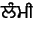 lammii. 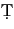ipp
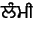 lammii. 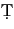ipp is one of the nasalization diacritics. Again the addak is
automatically produced by the IFM file.
is one of the nasalization diacritics. Again the addak is
automatically produced by the IFM file.
The following is a list of geminated consonants supported in this IFM file:
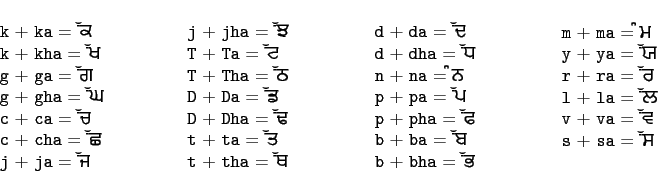
ipp is used with the vowels a, i,
and u, and with 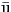 when it is in word-final
position, ie. 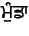 mu.nDaa. Bid
is used with the vowels a, i,
and u, and with 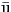 when it is in word-final
position, ie. 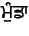 mu.nDaa. Bid is used with all other vowels, ie. 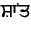 shaa.Nt.
is used with all other vowels, ie. 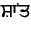 shaa.Nt.
A nasal and consonant when of the same class may either be encoded
with the nasal class code or with ipp .n. For
example, a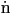ga may either be encoded 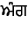 aN^ga
or a.nga. In either case, the IFM file will
automatically handle and produce the correct output.
.n. For
example, a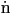ga may either be encoded 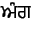 aN^ga
or a.nga. In either case, the IFM file will
automatically handle and produce the correct output.
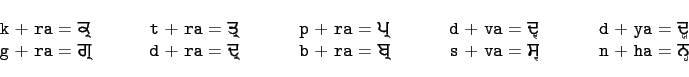
There are five consonants in Old Pañjb which are actually
conjunct consonants. These are the voiced aspirate (breathy voice)
consonants given below. I have accounted for them in the IFM file.
which are actually
conjunct consonants. These are the voiced aspirate (breathy voice)
consonants given below. I have accounted for them in the IFM file.
2009-12-04
ITRANS Home Page: http://www.aczoom.com/itrans/